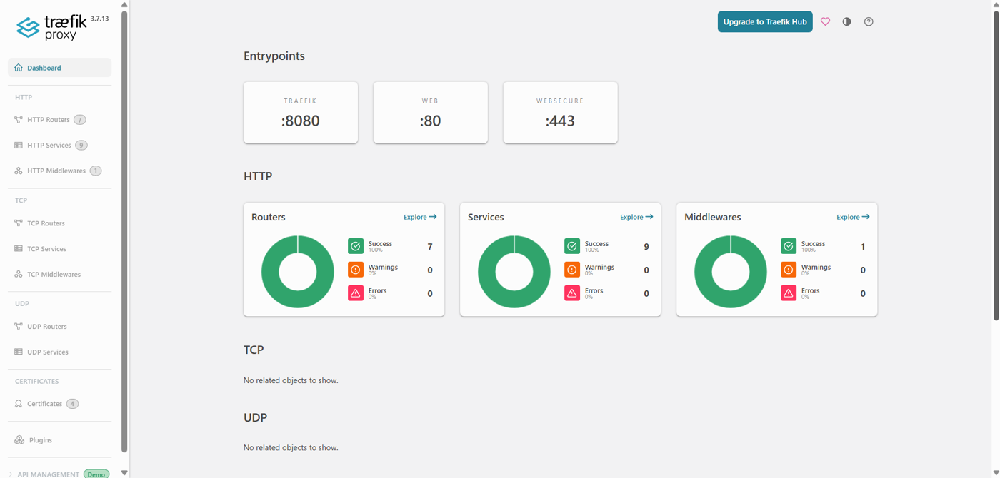
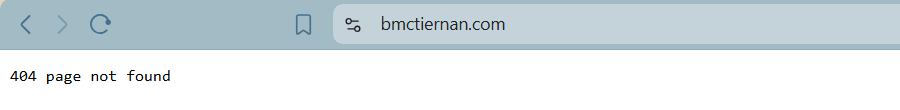

how server-of-love works, at report.bmctiernan.com
bridge · is373 hosting lab
server-of-love is a digitalocean droplet running ubuntu 24.04 lts. it hosts bmctiernan.com and www.bmctiernan.com over trusted https, with the traefik dashboard at traefik.bmctiernan.com and this report at report.bmctiernan.com.
- 1. request path
- 2. dns
- 3. welcome pages
- 4. verification
- 5. dashboard
- 6. controlled failure
- 7. backup plan
1 the request path
dns turns the name into the droplet's ip. the firewall only admits ports 22, 80 and 443. on port 443, traefik completes tls with the let's encrypt certificate, matches the hostname against each router's host rule, and forwards the request to that hostname's apache container, which serves its bind-mounted page. port 80 only redirects to https and answers let's encrypt's http-01 challenges.
2 dns answers
every hostname resolves to the droplet's ipv4 address, and none has an aaaa record. the records are a records at porkbun with a 600 second ttl. porkbun's default parking records (an alias on the bare domain and a wildcard cname) were removed first so they couldn't compete.
bridge@server-of-love:~$ dig +short A bmctiernan.com
192.241.153.53
bridge@server-of-love:~$ dig +short A www.bmctiernan.com
192.241.153.53
bridge@server-of-love:~$ dig @1.1.1.1 +short A traefik.bmctiernan.com
192.241.153.53
bridge@server-of-love:~$ dig +short AAAA bmctiernan.com
bridge@server-of-love:~$report.bmctiernan.com was added later with the same kind of a record, and the verifier in section 4 confirms it also resolves to 192.241.153.53.
why there's no aaaa record: an aaaa record maps a name to an ipv6 address. ipv6 isn't enabled on this droplet, so there's nothing to point to. leaving it empty is on purpose: a stale or wrong aaaa record would send ipv6 visitors to a different machine, and let's encrypt could fail to validate the certificate over ipv6.
3 welcome pages
every website hostname gets its own apache container and its own page, so you can tell which container answered. the lab allows a smaller instructor-approved list than five, and in class the requirement was one to two sites.
| hostname | container | page |
|---|---|---|
| bmctiernan.com | hosting373-site-1-1 | pink. traces the request path and explains a reverse proxy as an apartment building's front desk. |
| www.bmctiernan.com | hosting373-site-2-1 | lavender. explains how traefik tells the two hostnames apart and forwards each to its own container. |
| report.bmctiernan.com | hosting373-site-3-1 | blue. this lab report. |
each page includes my name, the course, its own hostname (which the verifier checks for), and buttons to the other pages. pages live at runtime/sites/<hostname>/index.html and are bind-mounted into the containers, so edits show up on refresh without rebuilding anything.
4 verification output
the instructor's verifier passed for every hostname: each resolves to the server, plain http redirects to https, the certificate is trusted, and the https response is correct.
bridge@server-of-love:~/373_hosting$ python3 scripts/verify.py --config hosting.json
bmctiernan.com: DNS 192.241.153.53
PASS: HTTP redirect, trusted TLS, and HTTPS response
www.bmctiernan.com: DNS 192.241.153.53
PASS: HTTP redirect, trusted TLS, and HTTPS response
report.bmctiernan.com: DNS 192.241.153.53
PASS: HTTP redirect, trusted TLS, and HTTPS response
traefik.bmctiernan.com: DNS 192.241.153.53
PASS: HTTP redirect, trusted TLS, and HTTPS responsecertificates come from let's encrypt through traefik's http-01 challenge on port 80, which is why port 80 stays open even though every visitor gets redirected to 443.
5 traefik dashboard
the dashboard at traefik.bmctiernan.com/dashboard/ shows how traefik connects each request to a container. it's read-only: routes come from docker labels in the compose file, not from clicking around here.
| part | on this server | what it does |
|---|---|---|
| entry point | websecure (port 443) | where traefik listens. web (port 80) only redirects and answers certificate challenges. |
| router | site-1@docker | matches Host(`bmctiernan.com`) on websecure and sends the request to its service. |
| service | site-1 | forwards the request to the hosting373-site-1-1 apache container. |

the full router list, read from traefik's api:
acme-http@internal | PathPrefix(`/.well-known/acme-challenge/`) | acme-http@internal | ['web']
dashboard@docker | Host(`traefik.bmctiernan.com`) | api@internal | ['websecure']
ping@internal | PathPrefix(`/ping`) | ping@internal | ['traefik']
site-1@docker | Host(`bmctiernan.com`) | site-1 | ['websecure']
site-2@docker | Host(`www.bmctiernan.com`) | site-2 | ['websecure']
site-3@docker | Host(`report.bmctiernan.com`) | site-3 | ['websecure']
web-to-websecure@internal | HostRegexp(`^.+$`) | noop@internal | ['web']reading it: the three site routers and the dashboard only listen on websecure. on port 80, acme-http answers let's encrypt's challenges and web-to-websecure catches everything else and redirects it to https. ping lives on the internal traefik entrypoint (port 8080, which isn't published to the internet) and powers the container's health check.
6 controlled failure
i stopped the apache container behind bmctiernan.com on purpose, predicted what would break, checked each layer, then brought it back. everything below is real output from the server.
the break:
cd ~/373_hosting
sudo docker compose -f runtime/compose.yaml stop site-1hypothesis: dns, the firewall and traefik are untouched, so the name still resolves and the connection still reaches traefik. but traefik only creates routes for running containers, so it should drop the bmctiernan.com router. i expect a 404 from traefik instead of my page, while www.bmctiernan.com keeps working because it has its own container.
evidence, layer by layer:
dig +short A bmctiernan.com
sudo docker compose -f runtime/compose.yaml ps
curl -I --connect-timeout 5 https://bmctiernan.com/
curl -I --connect-timeout 5 https://www.bmctiernan.com/[+] stop 1/1
✔ Container hosting373-site-1-1 Stopped
192.241.153.53
NAME IMAGE SERVICE STATUS
hosting373-site-2-1 httpd:2.4-alpine site-2 Up 29 minutes
hosting373-site-3-1 httpd:2.4-alpine site-3 Up 6 minutes
hosting373-traefik-1 traefik:v3.7.13 traefik Up 29 minutes (healthy)
HTTP/2 404 <- curl -I https://bmctiernan.com/
content-type: text/plain; charset=utf-8
content-length: 19
HTTP/2 404 <- curl -skI https://bmctiernan.com/
content-type: text/plain; charset=utf-8
content-length: 19
HTTP/2 200 <- curl -I https://www.bmctiernan.com/
content-type: text/html
server: Apache/2.4.68 (Unix)
content-length: 5302the ps table is trimmed to its useful columns, and the arrows labeling which curl produced each response are added for readability. everything else is exactly as printed.

result: the hypothesis held, layer by layer.
dns still answered 192.241.153.53, so the name layer was fine. site-1 disappeared from the running containers while traefik stayed healthy. traefik answered with its own plain-text 404 (19 bytes, no server: Apache header), which proves the request reached traefik but no router matched, since traefik drops a route when its container stops. www.bmctiernan.com kept returning 200 from apache, so the failure was isolated to one container.
one thing i didn't predict: the plain curl -I without -k succeeded, meaning the certificate was still trusted even with the site down. certificates are stored by traefik in acme.json, not inside the apache container, so stopping a site doesn't take its tls with it.
the fix:
sudo docker compose -f runtime/compose.yaml start site-1
python3 scripts/verify.py --config hosting.json[+] start 1/1
✔ Container hosting373-site-1-1 Started
bmctiernan.com: DNS 192.241.153.53
PASS: HTTP redirect, trusted TLS, and HTTPS response
www.bmctiernan.com: DNS 192.241.153.53
PASS: HTTP redirect, trusted TLS, and HTTPS response
report.bmctiernan.com: DNS 192.241.153.53
PASS: HTTP redirect, trusted TLS, and HTTPS response
traefik.bmctiernan.com: DNS 192.241.153.53
PASS: HTTP redirect, trusted TLS, and HTTPS responsestarting the container brought the router back on its own, with no traefik restart or config change needed.
what it shows: a 404 at a working address points to routing or content, not dns or the network. checking layers in order finds the broken one instead of restarting things blindly.
7 backup and restore plan
a fresh git clone of the course repo only restores the scripts. everything that makes this server mine lives in files git ignores, so those get backed up, and the backup lives off the server.
| what | where | private? |
|---|---|---|
| settings | hosting.json | keep private (has my email) |
| generated compose file | runtime/compose.yaml | not secret, needed to restore |
| welcome pages | runtime/sites/ | not secret, also on my laptop |
| certificates + acme account key | runtime/letsencrypt/acme.json | secret. never share or commit |
| ssh private key | ~/.ssh/id_ed25519 on my laptop | secret. never leaves the laptop |
| sudo password | password manager | secret |
backup (a few seconds of downtime, archive readable only by root):
sudo install -d -m 700 /var/backups/hosting373
sudo ~/server-of-love/hosting/compose.sh stop
sudo sh -c 'umask 077; tar -czf /var/backups/hosting373/backup-$(date -u +%Y%m%dT%H%M%SZ).tar.gz runtime hosting.json'
sudo ~/server-of-love/hosting/compose.sh up -dcompose.sh keeps the dashboard password on. a bare docker compose -f runtime/compose.yaml up -d would quietly drop it. the archive now also holds runtime/secrets/dashboard.htpasswd, one more reason it stays private.
then copy the archive to my own computer, encrypted, and never to github. a backup left on the same droplet disappears with it.
restore on a new droplet: redo the user, firewall and docker setup, clone the course repo, extract the archive into it, check that acme.json is still permission 600, point dns at the new ip, start the stack, then run the verifier. if the certificate file is lost, traefik just requests new certificates once dns points at the server.